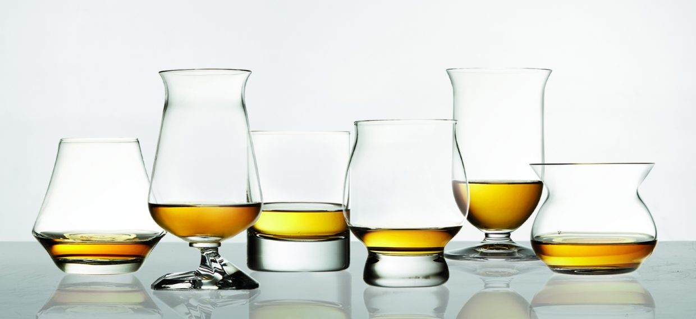
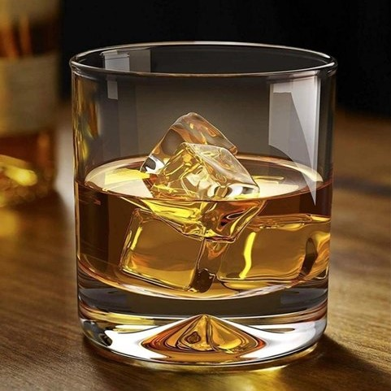
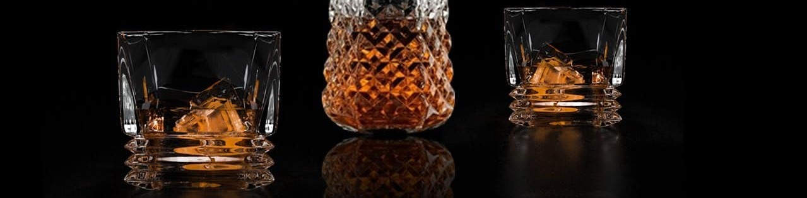
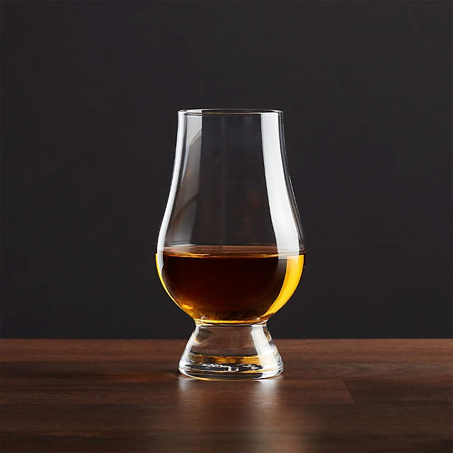

A BRIEF HISTORY OF DRINKING VESSELS
by Harvey Spector
It started with a quaich… From a 16th century small wooden cup, the drinking vessels used to taste Scotch whisky have never stopped evolving, from the tumbler to the sensorially-inspired tasting glasses of today. Ian Wisniewski leafs through the history books.
Taking a sip and savouring a Scotch whisky – the texture, the range of flavours and how they evolve, not to mention a memorable finish – can be such an amazing experience that our palates appear to be the ultimate ‘receptacle’ for the liquid. That may be. But our palates are in fact fourth in a sequence of significant receptacles. The first is the cask, with whisky developing the majority of its character while aging. Second is the bottle, the style and design of which can certainly heighten our anticipation, and the sense of occasion. And third in line, performing the vital role of conveying whisky to the palate, is the glass. And what a choice we have. Glencairn, Riedel, Lalique, Waterford, Dartington and many others offer whisky glasses in various shapes and sizes, including variations of the ‘classic’ option – the tumbler. "the size and shape of a glass influence the aroma and flavour profile a whisky delivers" Choosing a glass is partly personal preference and aesthetics; after all, sipping from an unattractive vessel would hardly be the same experience. But there’s also a greater significance, as the size and shape of a glass influence the aroma and flavour profile a whisky delivers (which is a subject for another day). Beyond the technicalities, it’s fascinating to see how this works in practice. Tasting the same Scotch whisky from a range of glassware can result in differences that are subtle, but which can also be significant. While we have an amazing choice today, there was originally only one option for drinking whisky: the quaich. Derived from the Gaelic word ‘cuach’, meaning ‘cup’, quaichs first appeared during the 16th century. The design resembled a shallow bowl, constructed from short wooden staves with lugs (small handles) on either side. But even the earliest quaichs made a style statement. Fashioning staves from different types of wood provided a palette of lighter and darker tones, which could be arranged to create a pattern.  The next stage of the quaich’s evolution came in the late 17th and early 18th centuries, when silversmiths began to embellish quaichs with silver mounts. And in the quest for more impact, quaichs also began to be made from silver. Some were engraved with lines to give the impression of staves, and so replicate the appearance of their wooden predecessors. Quaichs played an essential role at social gatherings. On arrival, guests were offered a quaich filled with Scotch whisky, the host proposed a toast, then the Scotch whisky was consumed in its entirety (technically a quaichfull, this drinking vessel having developed its own vocabulary). At the end of the evening, quaichs were refilled to provide a parting gesture, with the host once again proposing a toast. During the 19th century, the quaich’s monopoly ended as a new contender appeared on the scene: the tumbler. And, as glass production became a more commercial enterprise, the price of drinking glasses decreased, and tumblers were increasingly in circulation. The tumbler has, in turn, been joined by a range of alternative glassware in the past 25 years. This partly reflects the extraordinary growth of interest in malt whisky since the beginning of the 1990s; until that time Scotch whisky was essentially all about blends, with only a small number of devotees drinking malts. As interest in malts grew, the category experienced incredible innovation and specialisation, with a range of styles being released. Malt whisky also inspired the most knowledgeable following of any spirit category, with fans eagerly exploring every aspect. Enjoying the flavour had also become a comprehensive experience. This included analysing every nuance, and recording it (of course) in a detailed tasting note. Additionally, ‘deconstructing’ the flavour profile into its constituent parts was a way of working out how each characteristic was created during the production process.
With such a detailed approach, there came a corresponding interest in the glassware used for tasting and, as the range grew, there was more to choose from. Riedel’s single malt whisky glass, for example, made its debut in 1994. ‘This came about when Campbell Distillers asked us to come up with a glass that would highlight the very special characteristics of single malt whisky,’ recalls Riedel MD Steve McGraw. ‘And so, in 1992 at Riedel’s headquarters in Austria, we welcomed a panel of single malt experts to test a range of different glasses. "glassware influences the flavour profile a Scotch whisky" ‘We decided to support this selection with further research and, with the help of master distillers in Scotland, resulted in the single malt whisky [glass] from the Sommelier Series, with an elongated thistle shape on a truncated stem.’ These days, launching a new glass is a major decision. ‘We initially launched the Glencairn glass at Whisky Live in 2001, with 1,500 hand-made glasses, says Raymond Davidson, founder of Glencairn. ‘It was really well-received, and we decided to go into full-scale production. ‘That was a big commitment for a small company. Designing and producing the glass, using our in-house design department, was expensive, but the biggest investment is the marketing to promote it.’  Having such a varied range of glassware also raises considerations when it comes to writing tasting notes. A typical approach is to write a ‘dual’ tasting note, to show what a Scotch whisky delivers neat, and how this evolves with the addition of water. As glassware influences the flavour profile a Scotch whisky shows, an interesting (or, some would say, necessary) extra would be to specify the glass used. And the next step could be to write several tasting notes for the same Scotch whisky, with each tasting note attributed to a specific glass. Meanwhile, where can the design of glassware go from here? Is there scope for an even more specialised approach? The Norlan glass – due to launch in spring 2016 – aims to combine aesthetics and functionality with its innovative, two-walled hybrid design which mingles the olfactory delivery of a tasting glass with the tactile elements of a tumbler. But we could go further… Age statements are one way of navigating the enormous range of whiskies on offer. Could this result in glassware dedicated, for example, to more senior malts, such as a 40- or a 50-year-old? Could there be a glass dedicated to peated malts? Would any of this be commercially viable? We’ll just have to wait and see. In the meantime we can indulge in one of our favourite pastimes: speculation.